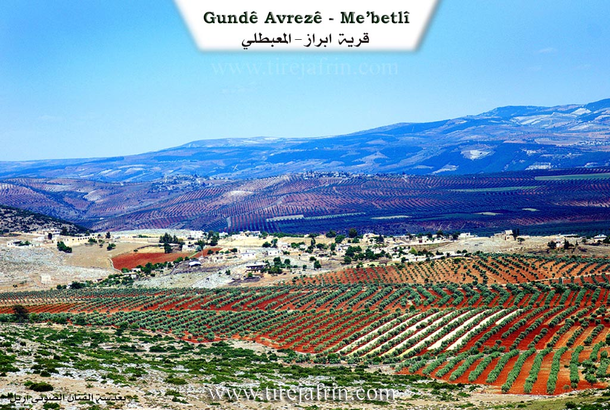

General Information
Nahiya (Subdistrict)
Mabeta
Also Known As
Abraz, Avraz, Avrazê, Efraziyê, Gundikê, أبرز, ابرز, افرازه
Families, Clans, etc.
Mala Belêl, Mala Dedê, Mala Hebeş, Mala Mamgurdê, Mala Xelîfo, Mala Xelîlera, Mala Xocê Resû, Mala Îmir

Photos

Basic Information about Avraz
Source: Afrin Zeyton
Etymology: The name Obrazê is interpreted by residents to mean "li hember," implying a location that is situated opposite or facing a specific direction or feature
Foundation Date/Period: 300 years ago
Caves: Şikeft Katêne, Şikeft Sarînc
Springs: Ava Ziravkê
Hills: Hecî Boker
Ruins: Obrazê jûr, Axazên Zana
Trees: Dara Çinarê
Wells: Bîra Obrazê
Other Landmarks: Qob
Summaries
I. Summary from TirejAfrin Site (English) of Avraz
Source: https://www.tirejafrin.com/site/kura%20afrin%20%20%20mebetli%20-%20avraze.htm
According to the book جبل الكرد (عفرين) دراسة جغرافية Çiyayê Kurmênc (Efrîn): A Geographical Study by د. محمد عبدو علي Dr. Mihemed Ebdo Elî:
Avraz /815 inhabitants - 250 houses - 13 km - 530 m/:
The name Avraz means "ascent, rise, slope, or the path climbing the mountain" (avraz), and this corresponds with the terrain of its location.
It is a medium-sized village located on the southern slope of Çiyayê Hawar. Some of its residents are known for their religiousness, including the well-known Kurdish political figure Mihemed Gulîn Şêx Sîdî.
According to the book عفرين .... نهرها وروابيها الخضراء Efrîn... Her River and Her Green Hills by عبدالرحمن محمد Ebdulrehman Mihemed from the village of Qetme:
Avraz is a village in Çiyayê Kurmênc, administratively belonging to the Mabeta district, Efrîn region, Heleb governorate. It is a large village located in the central section of the mentioned mountain, situated atop a rocky and limestone flat. Several gullies furrow it towards the south, and it overlooks agricultural lands in the direction of the Zerafkê valley. It is located approximately 13 km northeast of the town of Mabeta.
It is bordered to the north by the high and rugged mountain range of Çiyayê Hawar and the village of Dax Oba at the highest peak of the mountain; to the south by a fertile agricultural plain planted with olive trees and the village of Şêx Kêlo; to the west, just meters away, by the village of Kûbek; and to the east by a wide, agriculturally fertile plain and the villages of Sîmalik and Rûtê.
The number of houses in the village is approximately 85, and its age is about 350 years. Its old houses are made of stone and mud with flat wooden roofs, while the modern ones are concrete and have expanded towards the south, east, and west.
The village has an electricity network, a primary and middle school, and a mosque. A paved road connects it to the center of the village, the district center, and neighboring villages. There is an olive press in the village. Its residents work in rain-fed agriculture (olives, grains, legumes), irrigated agriculture from artesian wells producing summer vegetables and fruit trees, as well as raising sheep and goats. The village obtains drinking water from cisterns that collect rainwater in winter, and currently from artesian wells dug next to the houses.
Village Mukhtar: Mihemed Hemîd
Sources:
- Book: جبل الكرد (عفرين) دراسة جغرافية Çiyayê Kurmênc (Efrîn): A Geographical Study by د. محمد عبدو علي Dr. Mihemed Ebdo Elî.
- Book: عفرين .... نهرها وروابيها الخضراء Efrîn... Her River and Her Green Hills by عبدالرحمن محمد Ebdulrehman Mihemed from the village of Qetme.
Preparation and Execution:
- Manager of Navenda Tirej Efrîn: Ebdulrehman Hacî Osman
- 20/12/2013
II. Summary of Avraz from Afrin Zeyton
Source: https://www.youtube.com/watch?v=OELMeWRD6uY
The village of Obrazê (also referred to as Avrazê) is situated in the Afrin region, south of the Çoyê Hewarê area. Geographically, it is positioned with a plain stretching in front of it and the mountain Hecî Boker rising behind it. According to local elders, the village history spans more than three hundred years. The name Obrazê is interpreted by residents to mean "li hember," implying a location that is situated opposite or facing a specific direction or feature.
Historically, the settlement was divided into two distinct sections: Obrazê jûr (Upper Obrazê) and Obrazê jêr (Lower Obrazê). The upper village, now described as a ruin (xirabe), was once the home of Mala Îmir and Mala Mamgurdê. The speakers note that Mala Îmir was a noble family ("xanedan" or "axa") that migrated away to the village of Bêlê approximately one hundred years ago. Following this, the population concentrated in Obrazê jêr. The oldest existing houses in the village, dating back three centuries, belong to Mala Belêl, specifically the lineage of Mihemed Muslim Bîlal. Other long established families include Mala Xelîfo, Mala Xocê Resû, Mala Hebeş, and Mala Dedê. The community also absorbed waves of families arriving from nearby locations such as Gundê Çê, Gundê Şêx, Gubekê, and Gundê Çiya. The residents of Mala Belêl and those from Gundê Şêx are described as "aîlan şêx," indicating a religious or Sheikh lineage.
The village has maintained a distinct social and political structure since the Ottoman era. A notable historical figure, Muslimê Belêl, served as the village mukhtar during Ottoman times, followed later by Şêx Mehmûd (also called Şêx Mem). The community prides itself on strong internal cohesion, with close ties to neighboring villages like Gubek and Gulîka.
Significant landmarks define the village landscape. The most prominent water source is Bîra Obrazê, a well located near a large plane tree known as Dara Çinarê. There is also a water source called Ava Ziravkê. Residents mention specific caves such as Şikeft Katêne and Şikeft Sarînc, as well as a dome structure referred to simply as Qob. An ancient olive press known as Axazên Zana, once used with draft animals to process the harvest, now lies in ruins.
Economically, Obrazê has traditionally relied on agriculture. In the past, villagers raised livestock and cultivated wheat on the plain. Today, the village is renowned for its olive groves and vineyards ("rez"), although water scarcity is a major challenge; a well drilled to 300 meters failed to find water. Many younger residents now commute to Efrîn to work in sewing workshops ("warşê xeyata"), while others have emigrated to Europe or Aleppo. Despite modernization, the village retains physical traces of its past, including the stone masonry of the ancestral homes of Mala Belêl and the ruins of the upper settlement.
Transcriptions and Subtitles
| Source | Video | Subtitles | Transcript |
|---|---|---|---|
| Afrin Zeyton 1 | Watch Video | Download SRT | View Transcript |
Foundation/Origin Information of Avraz
Its first inhabitants lived in caves in an upper location known as Avrazê Jorîn, which is now in ruins. Over a century ago, the original families of the upper village, including the Çûtê and Malê Îmêr clans, migrated to the village of Bilêl. The current village, Avrazê Jêrîn, was subsequently settled by four main families who came from surrounding areas, including the Malê Bilêl, Malê Xelîfo, Malê Xudê Resûlo, and later, Sheikh families of the Kûkî Binyatê clan.
Source: Afrin Zeyton Transcript
Its first inhabitants lived in caves. The village was originally situated in the plain before its residents moved to the current mountain location. Its population grew from the founding E'mrta and Bilêl families and was later joined around a century ago by migrants from the village of Bêle.
Source: Other Channels
Possible Village Name Meaning of Avraz
Avraz: meaning "ascent, climb, slope, or the ascending path in the mountain", and this corresponds to the topography of its location.
Source: TirejAfrin Site
V. Links
- Tirej Afrin:
https://www.tirejafrin.com/site/kura%20afrin%20%20%20mebetli%20-%20avraze.htm - Gundên Me (post-2018):
https://www.youtube.com/watch?v=OELMeWRD6uY